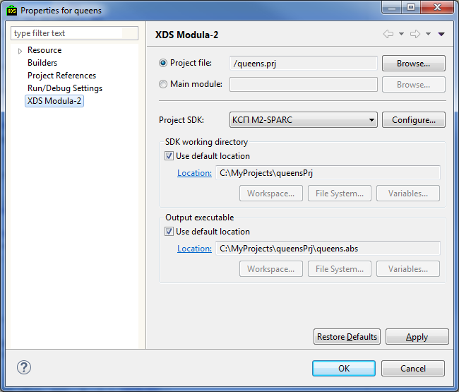

Each IDE resource is associated with the set of properties. Particular set of properties depends on the corresponding resource type and ??? it belongs to.
To view or edit resource properties use the Properties dialog. To open it for some resource:
It is also possible to open Properties dialog using the Alt + Enter hotkey combination.
Properties are divided into groups that are displayed in different dialog pages. This pages are in turn are organized into the hierarchial structure displayed in the left pane of the dialog. Atop the dialog filter field can be used to quickly navigate to the property page.
Select Window > Show View > Other... > General > Properties, to open the Property view. This
view shows main properties of the resource selected in the Navigator view such as the Project Explorer view.
To view and edit Modula-2 project specific properties use XDS Modula-2 page of the Properties dialog.

You can modify the following Modula-2 project properties: